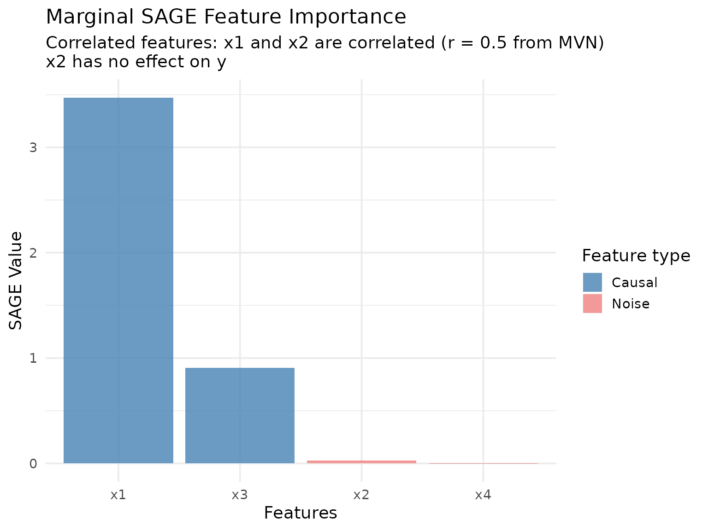
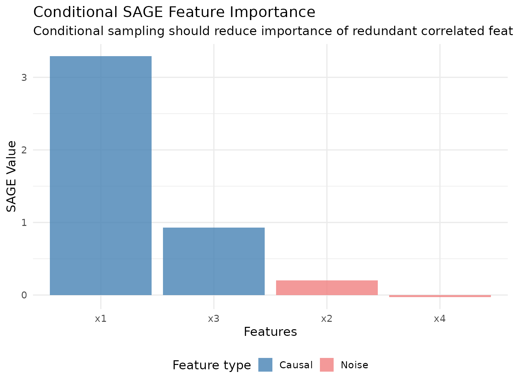
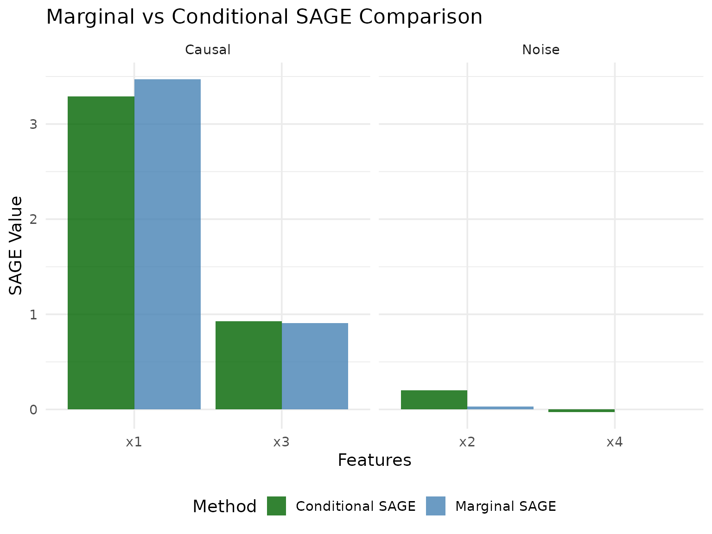
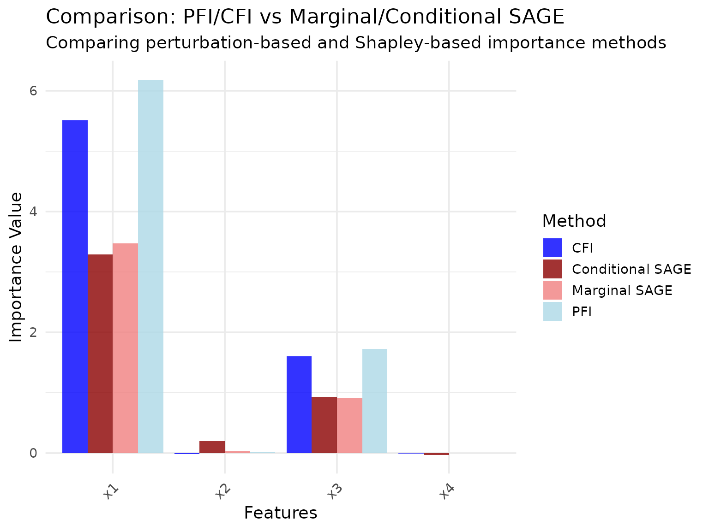

Shapley Additive Global Importance (SAGE)
Source:vignettes/articles/sage-methods.Rmd
sage-methods.RmdIntroduction
Shapley Additive Global Importance (SAGE) is a feature importance method based on cooperative game theory. It uses Shapley values to distribute the model’s total prediction performance among features. Unlike perturbation-based methods (PFI/CFI) that measure performance degradation when features are perturbed, SAGE measures each feature’s contribution through marginalization.
A key property of SAGE is that it provides a complete decomposition: the sum of all SAGE values equals the difference between the model’s performance and the performance when all features are marginalized.
xplainfi provides two implementations:
- MarginalSAGE: Marginalizes features independently (standard SAGE implementation)
- ConditionalSAGE: Marginalizes features using conditional sampling
Note on interpretation: SAGE’s theoretical properties and interpretation differ from perturbation-based methods. While PFI/CFI have clearer interpretations in terms of predictive performance, SAGE’s results can be more challenging to interpret, particularly when using conditional sampling. The choice of conditional sampler can significantly affect results, and there is limited empirical guidance on best practices. This vignette focuses on demonstrating the methods rather than making strong interpretive claims.
The SAGE estimator implemented here is what is
referred to as the “permutation estimator” in other implementations. It
works by first building up n_permutations permutations of
the feature vector and then successively evaluating prefixes of the
sequence from left to right as coalitions to evaluated. If a task has
features (x1, x2, x3), one permutation could be
(x2, x1, x3), resulting in these coalitions to be
evaluated: (x2), (x2, x1), and
(x2, x1, x3). The empty coalition will always be evaluated,
resulting in a total number of evaluations of
n_permutations * n_features + 1.
Demonstration with Correlated Features
To showcase the difference between Marginal and Conditional SAGE,
we’ll use the sim_dgp_correlated() function which creates a
simple linear DGP with two correlated features.
Model: \[(X_1, X_2)^T \sim \text{MVN}(0, \Sigma)\]
where \(\Sigma\) is a 2×2 covariance matrix with 1 on the diagonal and correlation \(r\) (default 0.5) on the off-diagonal.
\[X_3 \sim N(0,1), \quad X_4 \sim N(0,1)\] \[Y = 2 \cdot X_1 + X_3 + \varepsilon\]
where \(\varepsilon \sim N(0, 0.2^2)\).
Data generating process:
-
x1has a direct effect on y (β=2.0) -
x2is correlated with x1 (r = 0.5) but has no direct effect on y -
x3is independent with a direct effect (β=1.0) -
x4is independent noise (β=0)
set.seed(123)
task = sim_dgp_correlated(n = 1000, r = 0.5)
# Check the correlation structure
task_data = task$data()
correlation_matrix = cor(task_data[, c("x1", "x2", "x3", "x4")])
round(correlation_matrix, 3)
#> x1 x2 x3 x4
#> x1 1.000 0.447 -0.005 -0.048
#> x2 0.447 1.000 -0.049 -0.054
#> x3 -0.005 -0.049 1.000 0.051
#> x4 -0.048 -0.054 0.051 1.000This DGP allows us to observe how the two SAGE variants handle correlated features with different roles in the data generating process.
Let’s set up our learner and measure. We’ll use a random forest and instantiate a resampling to ensure both methods see the same data:
Marginal SAGE
Marginal SAGE marginalizes features independently by averaging
predictions over a subset of n_samples observations drawn
from the test dataset. We use 15 permutations of the feature vector to
build coalitions, resulting in 61 evaluated coalitions
(15 * 4 + 1).
# Create Marginal SAGE instance
marginal_sage = MarginalSAGE$new(
task = task,
learner = learner,
measure = measure,
resampling = resampling,
n_permutations = 15L,
n_samples = 100L
)
# Compute SAGE values
marginal_sage$compute(batch_size = 5000L)Let’s visualize the results:

We can also keep track of the SAGE value approximation across permutations:
marginal_sage$plot_convergence()
Early Stopping Based on Convergence
SAGE supports early stopping to save computation time when the
importance values have converged. By default, early stopping is enabled
with early_stopping = TRUE. Convergence is detected by
monitoring the standard error (SE) of the SAGE value estimates in the
first resampling iteration.
SAGE normalizes the SE by the range of their values (max - min) to make convergence detection scale-invariant across different loss metrics. Convergence is detected when:
\[ \max_j \left(\frac{SE_j}{\max_i(\text{SAGE}_i) - \min_i(\text{SAGE}_i)}\right) < \text{threshold} \]
The default threshold is se_threshold = 0.01 (1%),
meaning convergence occurs when the relative SE is below 1% of the
importance range for all features, which is equivalent to the approach
in the Python implementation in the fippy package.
You can customize convergence detection in
$compute():
# More strict convergence (requires more permutations)
sage$compute(early_stopping = TRUE, se_threshold = 0.005, min_permutations = 5L)
# Disable early stopping to always run all permutations
sage$compute(early_stopping = FALSE)After computation, you can check convergence status:
marginal_sage$converged # TRUE if converged early
marginal_sage$n_permutations_used # Actual permutations usedIf a resampling with multiple iterations (i.e., not holdout) is
supplied, the value of n_permutations_used will be set as
the value for n_permutations in all subsequent iterations
to avoid some computational overhead.
Conditional SAGE
Conditional SAGE uses conditional sampling (via ARF by default) to marginalize features while preserving dependencies between the remaining features. This can provide different insights, especially when features are correlated.
# Create Conditional SAGE instance using a conditional sampler
sampler_gaussian = ConditionalGaussianSampler$new(task)
conditional_sage = ConditionalSAGE$new(
task = task,
learner = learner,
measure = measure,
resampling = resampling,
n_permutations = 15L,
n_samples = 100L,
sampler = sampler_gaussian
)
# Compute SAGE values
conditional_sage$compute(batch_size = 5000L)Let’s visualize the conditional SAGE results:

conditional_sage$plot_convergence()
Comparison of Methods
Let’s compare the two SAGE methods side by side:

Methodological Notes
The difference between the two methods:
MarginalSAGE: Marginalizes all out-of-coalition features simultaneously by sampling from the marginal distribution, but does not account for conditional dependencies between in-coalition and out-of-coalition features.
ConditionalSAGE: Uses conditional sampling to “marginalize” out-of-coalition features while preserving the conditional dependency structure between in-coalition and out-of-coalition features.
The interpretation of SAGE values, particularly for ConditionalSAGE, can be affected by the specific conditional sampler used and the nature of feature dependencies in the data. The choice of sampler can significantly affect results, and there is currently limited empirical guidance on best practices for different settings.
Comparison with PFI and CFI
For reference, let’s compare SAGE methods with the analogous PFI and CFI methods on the same data:
# Quick PFI and CFI comparison for context
pfi = PFI$new(task, learner, measure)
#> ℹ No <Resampling> provided, using `resampling = rsmp("holdout", ratio = 2/3)`
#> (test set size: 333)
cfi = CFI$new(task, learner, measure, sampler = sampler_gaussian)
#> ℹ No <Resampling> provided, using `resampling = rsmp("holdout", ratio = 2/3)`
#> (test set size: 333)
pfi$compute()
cfi$compute()
pfi_results = pfi$importance()
cfi_results = cfi$importance()
# Create comparison data frame
method_comparison = data.frame(
feature = rep(c("x1", "x2", "x3", "x4"), 4),
importance = c(
pfi_results$importance,
cfi_results$importance,
marginal_results$importance,
conditional_results$importance
),
method = rep(c("PFI", "CFI", "Marginal SAGE", "Conditional SAGE"), each = 4),
approach = rep(c("Marginal", "Conditional", "Marginal", "Conditional"), each = 4)
)
# Create comparison plot
#| fig.alt: "Grouped bar chart with features on x-axis and importance on y-axis. Four colored bars per feature for PFI, CFI, Marginal SAGE, and Conditional SAGE."
ggplot(method_comparison, aes(x = feature, y = importance, fill = method)) +
geom_col(position = "dodge", alpha = 0.8) +
scale_fill_manual(
values = c(
"PFI" = "lightblue",
"CFI" = "blue",
"Marginal SAGE" = "lightcoral",
"Conditional SAGE" = "darkred"
)
) +
labs(
title = "Comparison: PFI/CFI vs Marginal/Conditional SAGE",
subtitle = "Comparing perturbation-based and Shapley-based importance methods",
x = "Features",
y = "Importance Value",
fill = "Method"
) +
theme_minimal(base_size = 14) +
theme(axis.text.x = element_text(angle = 45, hjust = 1))
While both PFI/CFI and MarginalSAGE/ConditionalSAGE distinguish between marginal and conditional approaches, these method families measure fundamentally different quantities. PFI and CFI measure the drop in predictive performance when features are perturbed, making their interpretation in terms of prediction loss relatively straightforward. SAGE methods measure each feature’s contribution to overall performance through Shapley value decomposition, which involves a different theoretical framework. The results shown here demonstrate the methods on the same data, but direct comparisons of the numerical values should be made with these methodological differences in mind.